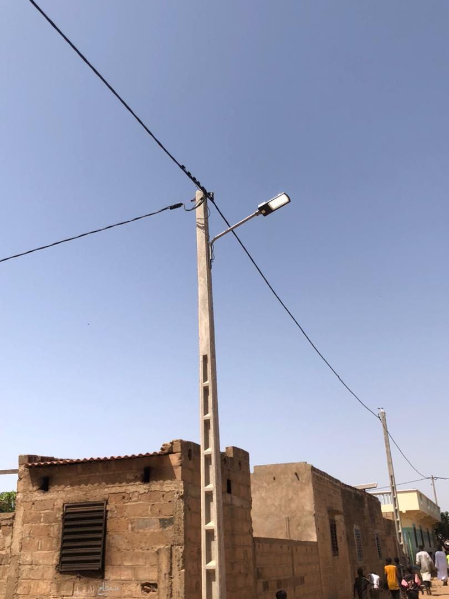

[Chapeau : deux ou trois phrases qui plongent le lecteur dans une situation concrète. Exemple de ton : « Imaginez un village où, à la tombée de la nuit, les activités s'arrêtent progressivement… »]
[Premier paragraphe : poser la scène, présenter les personnes concernées.]

[Intertitre : de quoi parle-t-on ?]
[Expliquer le sujet sans accumuler les termes techniques. Si un mot technique est nécessaire, l'expliquer en une phrase.]
[Intertitre : ce que l'on observe sur le terrain]
[Distances, infrastructures, coûts, maintenance, besoins des populations. Exemples concrets et vérifiables.]
« [Citation exacte, recueillie avec l'accord de la personne. Ne jamais inventer ni reformuler une citation.] »
[Prénom, rôle, village ou commune]
[Intertitre : quelles solutions, à quelles conditions ?]
[Possibilités techniques, avantages, limites et conditions de réussite.]
[Intertitre de conclusion]
[Terminer sur une réflexion ou une question ouverte. Inviter les lecteurs à partager leur expérience.]
Sources
- [Organisme, titre du document, année — lien]
- [Entretien avec …, réalisé le …]
← Retour au blog · Une erreur, un témoignage ? Écrivez-nous.